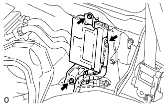

SUSPENSION CONTROL ECU > REMOVAL |
| 1. DISCONNECT CABLE FROM NEGATIVE BATTERY TERMINAL |
| 2. REMOVE TONNEAU COVER ASSEMBLY (w/ Tonneau Cover) |
Remove the tonneau cover.
| 3. REMOVE REAR NO. 2 SEAT ASSEMBLY LH (except Face to Face Seat Type) |
Remove the rear No. 2 seat assembly LH (Click here).
| 4. REMOVE REAR NO. 2 SEAT ASSEMBLY RH (except Face to Face Seat Type) |
| 5. REMOVE REAR NO. 2 SEAT ASSEMBLY LH (for Face to Face Seat Type) |
Remove the rear No. 2 seat assembly LH (Click here).
| 6. REMOVE REAR NO. 2 SEAT ASSEMBLY RH (for Face to Face Seat Type) |
| 7. REMOVE REAR STEP COVER |
 |
Detach the 2 claws and remove the step cover.
| 8. REMOVE REAR DOOR SCUFF PLATE LH |
 |
Remove the screw.
Detach the 3 claws and 4 clips, and remove the scuff plate.
| 9. REMOVE REAR FLOOR MAT REAR SUPPORT PLATE |
 |
Detach the 6 clips and remove the support plate.
| 10. REMOVE NO. 1 TONNEAU COVER HOLDER CAP (w/ Tonneau Cover) |
 |
Detach the 2 claws and remove the tonneau cover holder cap.
| 11. REMOVE REAR SEAT COVER CAP (w/ Rear No. 2 Seat, except Face to Face Seat Type) |
 |
Using a screwdriver, detach the 3 claws and remove the rear seat cover cap.
| 12. REMOVE FRONT QUARTER TRIM PANEL ASSEMBLY LH |
 |
 |
Detach the 3 claws and remove the cover.
 |
Remove the bolt and rear No. 1 seat belt anchor.
 |
w/ Rear No. 2 Seat, except Face to Face Seat Type:
Remove the bolt and rear No. 2 seat belt anchor.
w/ Rear No. 2 Seat, except Face to Face Seat Type:
Remove the clip and bolt.
Detach the 18 clips and 2 claws.
w/o Rear Air Conditioning System:
Disconnect the rear seat lock control lever cable and then remove the quarter trim panel.
w/ Rear Air Conditioning System:
Disconnect the thermistor connector and rear seat lock control lever cable, and then remove the quarter trim panel.

w/o Rear No. 2 Seat or w/ Rear No. 2 Seat, for Face to Face Seat Type:
Remove the clip.
Detach the 18 clips and 2 claws, and remove the quarter trim panel.

w/ Tonneau Cover:
Remove the screw and clip.
Detach the 18 clips and 2 claws, and remove the quarter trim panel.

| 13. REMOVE REAR SIDE NO. 2 AIR DUCT (w/ Heater) |
 |
Remove the 3 screws and duct.
| 14. REMOVE SUSPENSION CONTROL ECU |
 |
Detach the wire harness clamp and disconnect the connector.
Remove the 2 bolts and ECU.